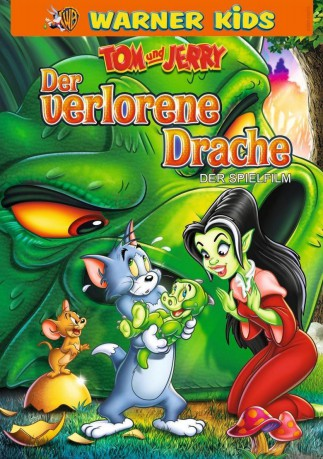

gesehen am 25.06.2015
gesehen am 25.06.2015Alternativ: Tom and Jerry: The Lost Dragon gesehen am 25.06.2015
 
 IMDB-Wertung: 6.0 / 10
IMDB-Wertung: 6.0 / 10  Metascore:
Metascore: 
Eure liebste Katze und die beste Maus sind wieder da – mit Musik, Magie und Monsterspaß! Das Abenteuer beginnt damit, dass Tom & Jerry auf ein geheimnisvolles leuchtendes Ei stoßen. Wenn sie nur wüssten, dass das Ei von einem riesigen feuerspeienden Drachen gestohlen wurde! Kurz darauf schlüpft der Babydrache und erwählt Tom als Mutter. Die wütende Drachenmama will ihr Baby zurück haben, aber da ist sie nicht die einzige … eine mächtige Hexe namens Drizelda hat mit dem Babydrachen ihre eigenen finsteren Pläne! Mit Hilfe starker Verbündeter und anderer Tiere kämpfen Tom & Jerry verbissen gegen die Hexe, damit das Baby zu seiner Mutter zurück kommt. Das ganze gipfelt natürlich in einem Finale voller Zauber, Magie und Cartoon-Wahnsinn! Und wenn sie nicht gestorben sind, leben sie noch heute? Findet es raus mit diesem Knaller-Abenteuer für die ganze Familie!
Jahr: 2014
Dauer: 57 Minuten
FSK: 6
Land: USA Studio: Warner Home VideoTonspuren:
Untertitel:
Auflösung: 720p (1280x720) Größe: 1239 MB
Genre: Animation/Trick, Komödie, Familie, Fantasy
Regisseur: Spike Brandt, Tony Cervone
Drehbuch: Brian Swenlin
Soundtrack: Michael Tavera
Darsteller:
 Vicki Lewis als Drizelda
Vicki Lewis als Drizelda Jim Cummings als Kaldorf
Jim Cummings als Kaldorf Laraine Newman als Elf Elder's Wife
Laraine Newman als Elf Elder's Wife Jonny Rees als Tin
Jonny Rees als Tin Jess Harnell als Pan
Jess Harnell als Pan Richard McGonagle als Alley
Richard McGonagle als Alley Wayne Knight als The Elf Elder
Wayne Knight als The Elf Elder Dee Bradley Baker als Buster / Elf Boy
Dee Bradley Baker als Buster / Elf BoyDatei: X:\Kinder Collections\Tom und Jerry\Tom und Jerry - Der verlorene Drache (2014, FSK6, 1280x720).mkv seit 12.03.2015
Festplatte: Kinder-Filme+Trick
 Es gibt insgesamt 16 Filme in der Gruppe 'Kinder Collections\Tom und Jerry'
Es gibt insgesamt 16 Filme in der Gruppe 'Kinder Collections\Tom und Jerry'